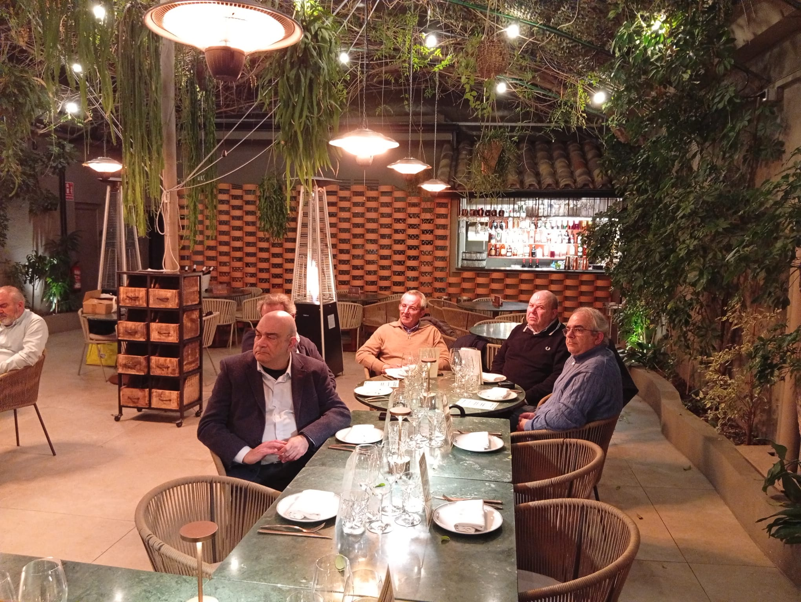

Brasa i foc com a eix gastronòmic
En el marc del recorregut gastronòmic de la temporada, l'associació Gourmets de Tarragona va realitzar la seva primera visita al restaurant Kema, a Cambrils, una plaça gastronòmica històricament vinculada al producte del mar i a la cuina marinera.
Kema planteja una proposta centrada en la cuina de brasa, incorporant producte tant de mar com de terra i oferint una mirada distinta dins d'una tradició molt definida. Una aposta amb personalitat pròpia que, en el context de Cambrils, no passa desapercebuda.
La minuta es va estructurar en forma d'actes, ordenant el recorregut de manera clara i progressiva, com una seqüència que avança des de l'obertura fins al tancament.

Obertura
L'obertura va fixar el to amb una primera sèrie de bocats pensats per obrir registres i anticipar el caràcter del menú.
La Gilda del Kema a la brasa amb caballa marinada i emulsió d'escabetx, el Panipuri de tàrtar de camarón vermell amb cremós de tubercles i huevas de salmó, i la "Papa Arrugà" amb costella de Black Angus i aroma McCallan 12 anys van introduir distints matisos des del primer moment, amb guiños a diverses tradicions culinàries integrats amb naturalitat dins d'un discurs propi.


Intermezzo
L'intermezzo va funcionar com a transició i canvi de profunditat, amb plats que van elevar la complexitat del recorregut abans d'entrar al seu nucli principal.
El Micuit de Foie amb fumat, calvados, compota de pera rústica i hibiscus, el "Sam de Cevitxe" de llobarro salvatge amb llet de tigre i torreznos de Soria, i la Gamba en Gabardina amb salsa satay, cacauets i coco van configurar un tram on el menú va guanyar en contrast i ambició.


L'intermezzo es va tancar amb dos plats que ja anticipaven el territori de les àries: el Mar i Muntanya de carpaccio de presa ibèrica amb melós de tonyina Balfegó, i el Steak Tartar de vaca vermella gallega amb alls escalivats, pa torrat i moll de l'os.
Àries
Les àries van representar el moment de major exposició de la proposta, on la cuina va buscar definir amb més claredat la seva veu i intenció.
El Bacallà "Skrei" a la robata amb pèsols, tirabeques i "vizcaïna" d'ametlla es va presentar com un dels plats més singulars del recorregut, amb una reinterpretació de la salsa clàssica que va aportar un gir de caràcter propi.


El Rib-Eye de vaca gallega amb mantequilla fumada, risotto de bolets i tòfona va tancar la part estructural del menú amb solvència i producte de nivell. Tècnicament ben resolt, tot i que en aquest tram, com en algun moment anterior, es va trobar a faltar una major contundència en la construcció del sabor. La cuina de brasa té capacitat per generar registres molt profunds, i hi va haver moments on el conjunt es va quedar a les portes d'aquest potencial.


Pre-Finale
Un Frozen Moscow Mule Cocktail va actuar com a interludi refrescant, marcant el límit entre la part salada i el tancament dolç del menú amb bon criteri i sentit del ritme.
Finale
La Deconstrucció va tancar el recorregut amb una reinterpretació del cheesecake amb textures de fruits vermells del bosc. Un postre elegant en el seu plantejament, més atent a l'equilibri que a l'efectisme, que va posar el punt final a l'experiència amb lleugeresa.
Un maridatge amb criteri i territori
El recorregut de maridatges va ser un dels elements més elaborats de la proposta, amb una selecció de referències del territori que va acompanyar cada acte amb coherència i criteri. Les explicacions del responsable de la bodega van aportar context a cada referència amb un discurs tècnic accessible per al conjunt dels assistents.
Brut Nature Reserva 20m
Com és habitual en les visites de l'associació, la valoració final dels socis es reflectirà posteriorment en les votacions del recorregut gastronòmic anual.
Un dels punts forts de la vetllada
El servei va ser un dels punts forts de la vetllada. Bon ritme, coordinació fluida entre cuina i sala, i una presència constant que va acompanyar l'experiència sense interferir en el seu desenvolupament.
Un equip que va demostrar experiència en la gestió de taules nombroses i que va saber mantenir el nivell durant tota la cena.


Membres de l'associació Gourmets de Tarragona durant la visita al Kema · Cambrils — Març 2026
Com és habitual en les visites de l'associació, la valoració final dels socis es reflectirà posteriorment en les votacions del recorregut gastronòmic anual.